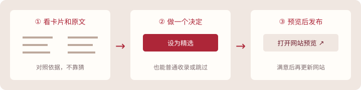

不需要代码，也不需要操作数据库整理校园活动，
你只要做几个选择。
先打开管理页
第一次使用，在这个文件夹里双击 打开活动管理.vbs。它会自动打开浏览器。
已经启动？打开管理页 →若链接暂时打不开，先双击启动文件；不需要输入命令。

① 待确认：一次看十来条
先点“拿10条试试”。左边选活动，中间可改名称、类型和补充说明，右边对照原文依据。
- 普通收录：同学能搜索到，但不挤进默认精选。
- 设为精选：你觉得值得推荐，放进默认精选列表。
- 暂时跳过：留着以后再说；不删除原件，不自动发布新资料。
“拿10条试试”取自已经收录的活动，加入确认列表本身不会改变线上网站。新文件在下方资料箱选择，之后点“复制整理请求”发给Sol，整理后再看卡片。
② 已收录：像查通讯录一样找活动
搜索名称，点“查看/改”，修改后保存。改错了点“撤销上次修改”。原文条件和历年通知会保留。
③ 预览与发布：满意了再上线
先点“生成预览”，再点“打开预览”。如果满意：
- 显示“确认发布到网站”时，点击后等待“已上线”。
- 显示“交给Sol发布”时，点击它，再点“复制发布请求”，发到与Sol的聊天里即可。
保存到本机≠已经上线。上传文件≠已经整理。界面会分别告诉你当前状态。
用完直接关闭浏览器。下次双击“打开活动管理.vbs”回来，进度会保留。